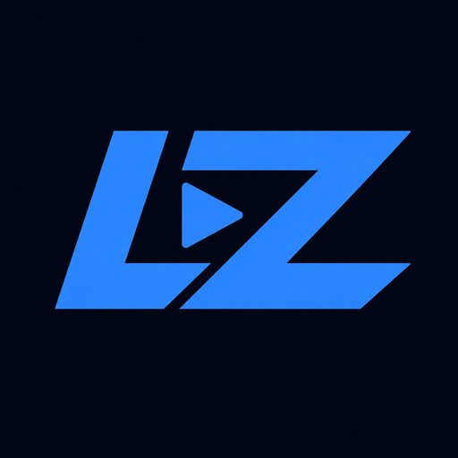

AI UGC & product ads
Product-first ads and UGC-style videos with a strong opening, a clear offer and pacing made for social feeds.
Plan an ad
Locus ZyanAI CREATIVE AGENCY · BANGLADESH · WORLDWIDE
Human-directed creative. AI-powered production. Locus Zyan makes ads, films, animation and digital experiences around the goal behind your brand.
No generic AI output. Every concept is shaped and checked by a human.
WHAT WE MAKE
From a single product ad to a full creative system, we bring ideas from first brief to final delivery.
Product-first ads and UGC-style videos with a strong opening, a clear offer and pacing made for social feeds.
Plan an adShort films and story-led videos shaped from concept and script through cinematic AI visuals and final edit.
See story workCharacter-led cartoons, anime-inspired shorts and animated scenes with a consistent look across the project.
Discuss animationShort-form and long-form content for Reels, Shorts, TikTok and YouTube—scripted, edited and ready to post.
Build a content planAI-assisted creative and social media management, shaped around your brand voice and agreed project scope.
Talk through the scopeHelpful automated responses that answer common customer questions and make it easier to start a conversation.
Explore automationClean, responsive websites with clear messages and direct paths for visitors to become inquiries.
Plan a websiteStart with the business goal—more attention, more leads or more trust—then build creative around it. No guaranteed-result claims, just focused work.
Share your goalWHY LOCUS ZYAN
AI is the engine, not the creative director. Every idea, script, visual, voice and edit gets human direction and review, so the final work feels intentional—not like a template.
Start with your audience and business goal.
Choose a clear creative direction before production.
Review, refine and deliver for the platform you need.
THE CREATOR BEHIND THE BRAND
A creator-led studio based in Bangladesh, working remotely with clients worldwide. Human direction stays at the center—from the first brief to the final frame.
THE STORY SO FAR
Behind Locus Zyan is Mujahid, an AI video creator and editor based in Bangladesh. With about two years of hands-on AI-video experience, his work spans product ads, AI filmmaking, 2D/3D animation and social content—alongside AI-assisted social media management, chatbots and conversion-focused websites. Every project starts with the client’s goal and receives human direction and review from concept to delivery.
SELECTED WORK
Illustrative card art—not project footage. Linked profiles show public examples; add more here as the portfolio grows.
Have a project in mind? Explore the Fiverr portfolio or ask for a tailored example.
A SIMPLE PROCESS
Clear communication at each stage. Scope, timing, deliverables and revisions are agreed for each project.
Share your audience, message, platform and the result you want your creative to support.
Align on format, tone, references, deliverables and a practical scope before production.
We create, edit and review the work, then deliver in the agreed format.
READY WHEN YOU ARE
Tell us what you're building and what you want the creative to do. We'll take it from there.
Download the studio brochure PDF ↗Preset FAQ · not generative AI